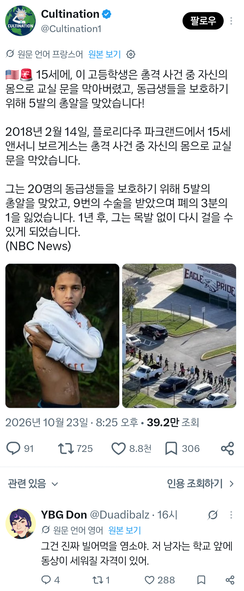

동급생들을 지키기 위해 총알 5발을 맞은 고등학생
댓글
염~소(날두톤으로)
갑자기 분위기 염소
메에에에에에
fking goat
목발 없이 걸을 수 있게 되었으니 당장 동상에 넣어라
진짜 개상남자네
존경스럽네
ㄹㅇ 학교에 동상세워줘야함
ㅅㅂ 어케했노 진짜

염~소(날두톤으로)
갑자기 분위기 염소
메에에에에에
fking goat
목발 없이 걸을 수 있게 되었으니 당장 동상에 넣어라
진짜 개상남자네
존경스럽네
ㄹㅇ 학교에 동상세워줘야함
ㅅㅂ 어케했노 진짜
염소야ㅋㅋㅋㅋ